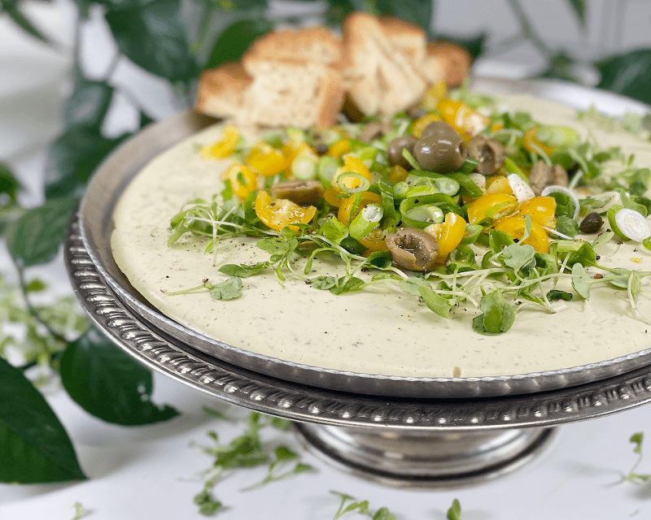
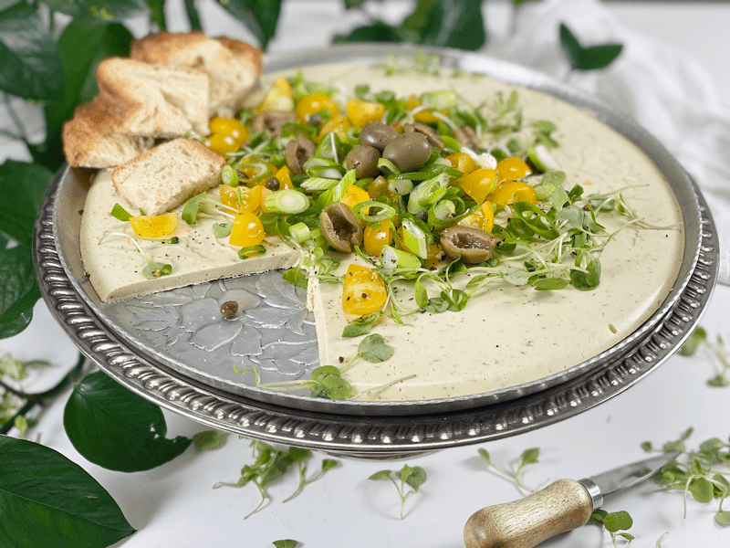
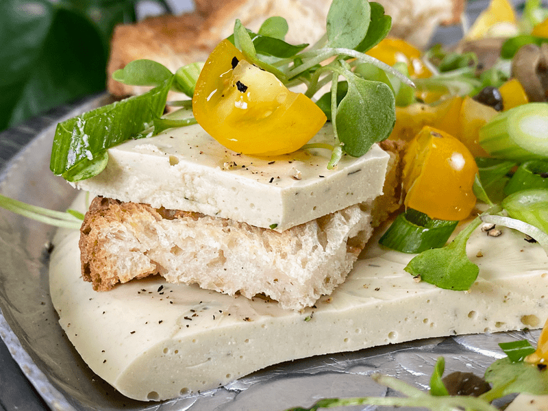
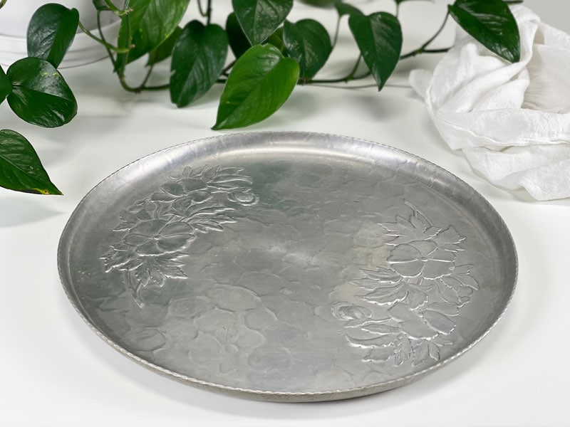
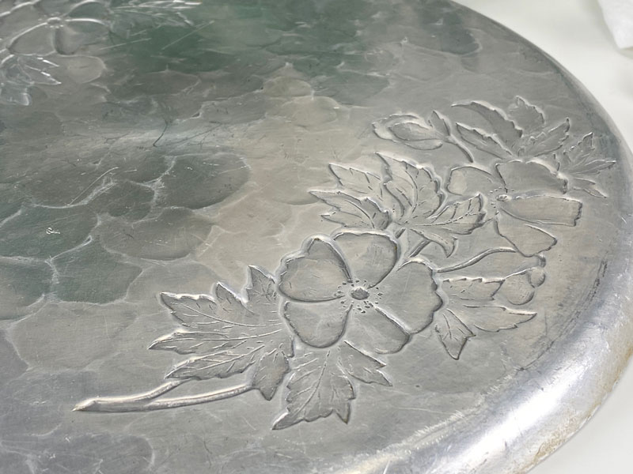
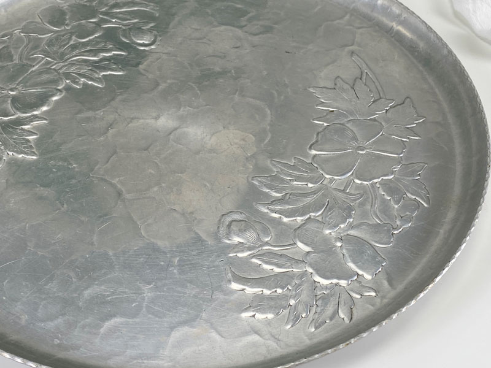
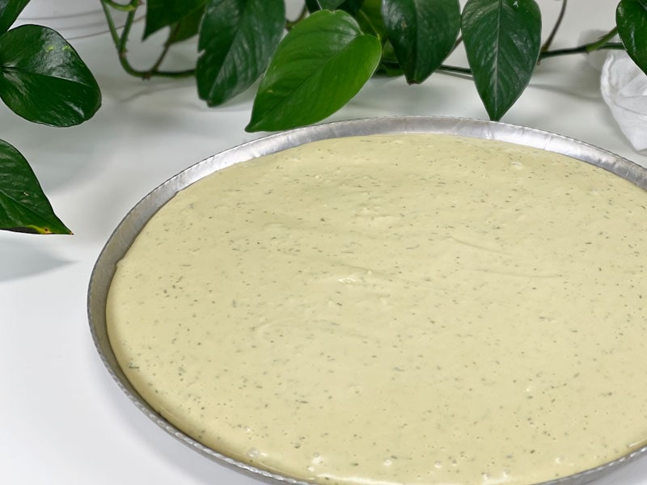
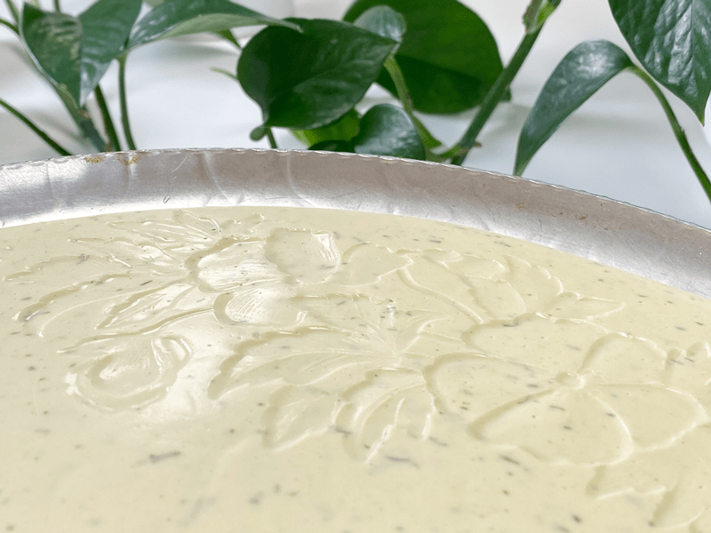

Wasabi Vegan Cheese with Tomato Arugula Salsa | Cashew Based | Oil-Free
Bob and I are fans of wasabi so anytime I can come up with a recipe that includes it, well, Bob is always game. That is why I created today’s recipe. My sweet Bob has been working so hard on the site (background grunt work) – the type of work that goes unseen, except by me. So, I decided to make him a special treat. To complement and balance the wow-factor of the wasabi cheese I made a “salsa” of yellow cherry tomatoes, sliced green onion, and arugula microgreens. Simple but the flavors paired so well. When I went back to see if he was enjoying it, half of the cheese and salsa were gone. Now, that’s a good sign!

Taste and Texture
If you are looking for a delicious way to tap into your culinary creativity, this recipe just might inspire you. We will dive into that down below but first, let’s talk taste and texture. This cheese has a wonderful mouthfeel, it’s not creamy like cream cheese or firm like cheddar cheese… it’s somewhere in between, sort of in a class of its own. It holds up well and stays staple sitting out at room temperature during festive gatherings or for grazing spouses.
Each ingredient shines through when you take a bit. You experience a gentle heat from the wasabi, which people sometimes describe as a feeling of wasabi heat going “up their nose” when they take a bite followed by saltiness and umami that the miso and nutritional yeast add to the cheese. It tastes great on crackers or as an added layer to a sandwich. We were out of crackers and I didn’t have time to make any, so I toasted Bob some gluten-free bread to eat it on.

Ingredient Run-Down
Wasabi Powder
- Wasabi is hot, but not in the same way that hot peppers are hot. Hot peppers get their spiciness from the chemical capsaicin, whereas wasabi gains its spiciness from isothiocyanates which create a vapor. Like horseradish – that hits the nose, not the tongue or throat.
- Wasabi Powder is, in theory, a hot-tasting powder made from the dried, ground roots of Wasabi plants. But, finding true wasabi can be difficult and expensive therefore many companies use horseradish in place of real wasabi. I found Sushi Sonic Real Wasabi powder at our local grocery store (shock-a-roo). If you can’t find the real stuff, you can substitute it with the horseradish version.
- TECHNIQUE for wasabi powder – You should always create a paste with it before using it. In a small bowl add enough cool water to create a paste, then let stand a few minutes for the flavor to develop. To get it hotter, once you have made the paste, turn the bowl upside down. The paste sticks to the bottom of the bowl; the developing gasses are trapped, making the wasabi paste hotter. It will weaken if exposed to air so don’t make it too far in advance.
Agar Powder
- The agar is what gives this cheese recipe the ability to hold its shape.
- Agar is an excellent Vegan replacement for gelatin, which is derived from animal hooves. But don’t expect the same results when replacing gelatin with agar in a recipe. It won’t give the same texture. Agar gives a firmer texture. Plus, it is much more powerful than gelatin: 1 teaspoon agar powder is equivalent to 8 teaspoon gelatin powder.
- Agar has no taste, no odor, and no color. It sets more firmly than gelatin and stays firm even when the temperature heats up. The melting point is around 185 degrees (F).
- Read more (here).
White Chickpea Miso
- I am not a fan of soy-based products so I use miso made from chickpeas. One thing that I have learned about miso, in general, is that every style and brand has a different saltiness to it. Knowing that it’s wise to taste test the brand you use before you start making the cheese base. If it is really salty, cut back on the added sea salt.
- IF you do use soy-based miso make sure that it is organic / NON-GMO since most soy has been genetically modified.

Shapes and Molds
When creating vegan cheese such as this recipe with the ingredient agar, you can be so creative and use darn near any object for a mold. The main thing you want to avoid is molds/containers that have a lip that curls inward, which would permit the cheese from popping out. Silicone molds are the best but I have used small glass containers, bread pans, mini tart pans, beakers, and so forth. There is NO need to grease or line the container either. So much fun!
I hope you are all safe and healthy as we venture through this new way of life. Please be sure to leave a comment below. I would love to hear from you. blessings and health, amie sue
 Ingredients:
Ingredients:
yields 2 cups
Cheese base:
- 3/4 cup water
- 1/2 cup raw cashews, soaked 2 hours
- 1/4 cup nutritional yeast
- 3 Tbsp lemon juice
- 1 Tbsp white chickpea miso
- 2 Tbsp wasabi powder
- 1 Tbsp Dijon mustard
- 1 tsp Himalayan pink salt
- 1 tsp onion powder
- 1/4 tsp garlic powder
- 1/4 tsp dried onion flakes
- 2 tsp dried dill weed
Agar slurry:
- 1 cup water
- 5 Tbsp agar flakes or 1 1/2 Tbsp agar powder
Preparation:
Cheese base:
- Soak the cashews in 1 cup of water to soften them. Once done soaking, drain and discard the soak water.
- Set aside a 2 cup container (mold). You can use just about anything to mold the cheese in. Be creative. I find that I don’t need to grease or line the mold, the cheese just pops out.
- Wasabi paste – whisk the wasabi powder and 2 Tbsp of water in a small bowl. Set aside for 15 minutes.
- Creating a paste first will help activate the wasabi flavor. See the Ingredient Run-Down section above.
- In a blender add the water, cashews, nutritional yeast, lemon juice, miso, wasabi paste, salt, mustard, onion powder, and garlic powder and blend until smooth. Check for grit, if you feel any, keep blending. A food processor won’t work for this cheese, in case you were wondering.
Agar slurry:
- Place 3/4 cup of water and agar in a small saucepan. Whisk together until the slurry just starts to get a small boil. Reduce the heat and simmer, whisking often, for 5 to 10 minutes, or until completely dissolved.
- Once the slurry is ready, start the blender and get a vortex going. Quickly but carefully pour the agar slurry into the blender, add the dried minced onion and dill. Blend for about 10 seconds. As the agar slurry starts to cool it starts to thicken, so don’t dilly-dally here.
- Pour into container(s) and cool uncovered in the refrigerator.
- When completely cool, cover and chill several hours. To serve, turn out of the container and slice.
- Store covered in the refrigerator. It will keep 5 to 7 days.
-

-
I picked this dish up at a garage sale years ago, with the idea of using it to make an agar-based cheese. I am always looking for dishes that are embossed because the design leaves its mark on the cheese, as you will see.
-

-
Here is a close-up of the embossed flowers on the top side of the “plate.”
-

-
And this is the opposite side.
-

-
Once the batter was made, I quickly poured it into the “plate” so it could set up.
-

-
After 30 minutes in the fridge, it was ready to flip out of the “plate” …. would you look at that pattern?! So beautiful.
© AmieSue.com